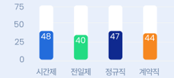

사례 맞춤 검색
- 홈
- 장애인 채용사례
- 사례 맞춤 검색
- 기업 형태
-
- 전체
- 공공
- 민간
- 업종
-
- 전체
- 농업, 임업 및 어업
- 광업
- 제조업
- 전기, 가스, 증기 및 공기조절 공급업
- 수도, 하수 및 폐기물처리, 원료재생업
- 도매 및 소매업
- 운수 및 창고업
- 건설업
- 숙박 및 음식점업
- 정보통신업
- 금융 및 보험업
- 부동산업
- 전문, 과학 및 기술 서비스업
- 사업시설관리, 사업지원 및 임대서비스스업
- 공공행정, 국방 및 사회보장행정
- 교육 서비스업
- 보건업 및 사회복지 서비스업
- 예술, 스포츠 및 여가관련 서비스업
- 협회 및 단체, 수리 및 기타 개인 서비스업/국제 및 외국기관
- 지역
-
- 전체
- 서울
- 경기
- 인천
- 강원
- 대전
- 세종.충남
- 충북
- 광주
- 전남
- 전북
- 대구
- 경남
- 경북
- 부산
- 규모
-
- 전체
- 100인미만
- 100~299명
- 300~499명
- 500~699명
- 1,000명 이상
- 근무 형태
-
- 전체
- 전일제
- 시간제
- 근무 유형
-
- 전체
- 정규직
- 비정규직
- 근무조건
-
사례 맞춤 검색 결과
위 조건으로 100개의 기업이 33개의 직무로 고용사례가 검색되었습니다.
최다직무
- 비품관리원 77건
- 외부신체기능장애 55명
- 건축도장공 15명
근무 유형&형태

평균연봉

검색결과 총 100건
| 직무 | 업종 | 기업유형 | 규모 | 소재지 | 장애유형 | |
|---|---|---|---|---|---|---|
| 비품관리원비품관리원비품관리원 | 공항운영공항운영공항운영 | 민간기업 | 0~99 | 경기도 성남시 분당구 구미로 173번길 59 | 지적장애, 자폐성장애, 지적장애, 자폐성장애 | |
| 비품관리원 | 공항운영 | 민간기업 | 0~99 | 경기 안산시 | 지적장애, 자폐성장애 |
-
비품관리원
공항운영 민간기업 0~99경기도 성남시 분당구 구미로 173번길 59 지적장애, 자폐성장애, 지적장애, 자폐성장애 팝업열기
-
비품관리원
공항운영 민간기업 0~99경기 안산시 지적장애, 자폐성장애 팝업열기
-
비품관리원
공항운영 민간기업 0~99경기 안산시 지적장애, 자폐성장애 팝업열기
-
비품관리원
공항운영 민간기업 0~99경기 안산시 지적장애, 자폐성장애 팝업열기
-
비품관리원
공항운영 민간기업 0~99경기 안산시 지적장애, 자폐성장애 팝업열기
-
비품관리원
공항운영 민간기업 0~99경기 안산시 지적장애, 자폐성장애 팝업열기